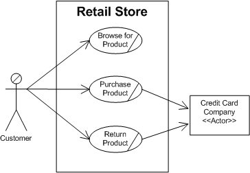
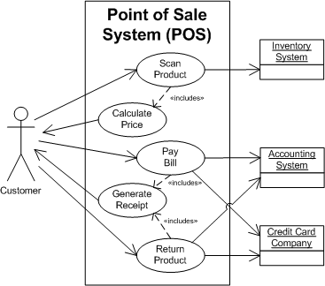
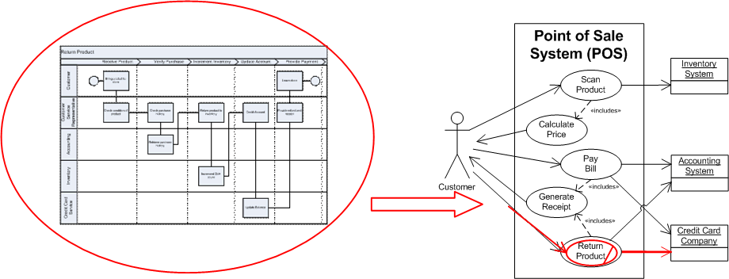

OUM |
Task Overview |
||
Method Navigation |
Current Page Navigation |
||
|
|
||||||||
The purpose of this task is to develop the Business Use Case Model. The Business Use Case Model provides an enterprise-level framework from which the Use Case Model (RA.023) can be built upon, if necessary.
A Business Use Case Model may be used in projects where the business functions need to be understood in detail. This is particularly important when there is no existing system and custom components need to be developed to support an area of the business that is not well documented.
For projects that involve the upgrade of Oracle products, this task can be used in combination with RD.011 (Review Future Process Model) to help the project team understand interactions between the actors and the business.
The Business Use Case Model provides the business context in which the system under discussion (SuD) resides, and with that support a better understanding of the purpose, as well as of the scope of the system. It describes what the business does (business processes) and who does it (customers, employees, vendors, all known as actors). The Business Use Case Model provides an enterprise-level framework from which the system use cases can be elicited, and the Use Case Model (RA.023) can be started. Here’s an example of a Business Use Case Model:

The key difference between the Business Use Case Model (above) and the Use Case Model (below) is that the Business Use Case Model has the enterprise business and/or organization as a scope (and may cover aspects that are outside of the scope of the current project, meaning that some business use cases may not be subject to implementation), whereas the Use Case Model has the system as a scope (and is used to define the set of requirements that are within scope of the current project, meaning that all system use cases are subject to implementation). Here’s an example of a Use Case Model (RA.023):

In a commercial off-the-shelf (COTS) application implementation, you may have access to pre-existing, multi-level business process models, which depict how the future application system supports the business functions being addressed by the project. If such process models are available, leverage the top-level models (i.e., Level 1 or Level 2) to help identify the enterprise-level business functions in scope, and the actors who participate in those functions, for developing the Business Use Case Model.

The Business Use Case Model represents the highest-level view of the operations or processes performed within a business area. This model should not describe system and/or implementation details but should focus mainly on the business processes. This model generally relates to the Level 1 Business Process Modeling that is performed during the Inception phase. Examples of business use cases (from the customer’s perspective regarding a retail store) are: Browse for Product, Purchase Product, and Return Product.
A.ACT.GBRI Gather Business Requirements - Inception
Business Use Case Model
The Business Use Case Model is a model of the interior of the business. Goals are set at the level of workers groups, customer sets, suppliers, etc. It models what this organization does and how it is organized to deliver value. The Business Use Case Model has the design scope of enterprise. You are discussing the behavior of the organization, its departments and their relationship with customers, suppliers, worker groups, etc. The focus should be on the operation of the business rather than its computer systems. This model can serve as a supporting input for the MoSCoW List (RD.045) and the Use Case Model (RA.023). Usually, the Business Use Case Model consists of (business) use case descriptions. Optionally the Business Use Case Model includes a set of use case diagrams that serve as an index to the use case descriptions.
Refer to the White Paper: Getting Started with Use Case Modeling as referenced in the Templates and Tools section below for guidelines on how to organize use cases with use case diagrams.
One way to identify business use cases is by starting to identify the actors that have a goal with respect to the business and the events to which the business responds. Examples of such triggering events, as they are called, are “Hire new employee” or “Receive purchase order." The business use cases document the response of the organization to these triggering events. To be able to document how external systems are involved, these systems can be included as actors.
You should follow these steps:
No. |
Task Step | Component | Component Description |
|---|---|---|---|
1 |
Find business actors. In this step, identify the main business actors representing groups of workers (or departments), customers, suppliers that may interact with the organization. This step can be performed by facilitated workshops (JAD), brainstorming, interviews, checklists, or examining existing documentation. | Business Actor Model | The Business Actor Model contains the business actors discovered during Business Use Case Modeling workshops. Each business actor represents a role played in relation to the business by someone or something in the business environment. Actors are broadly of two types:
|
2 |
Find candidate use cases. In this step, use top-down and bottom-up approaches to discover candidate (business) use cases. Top-down: From the main activities and workflows, detail the goals of each actor; Bottom-up: From each actor point of view, figure out if all goals of that actor are described. |
Actor-Goal List or Business Use Case Diagram |
At the business level, and using JDeveloper, sometimes it is easier to draw an UML Business Use Case Diagram. If some important description is necessary at this point, include it in your diagram or list. You can use simple brief descriptions or the "casual-dressed" format. The bottom-up approach is one of the most important uses for the actors. |
3 |
Add detail to each business case. In this step, each business case is detailed at the adequate level. Use the casual or fully-dressed models accordingly with project necessity. Remember that the business use case should be a document written in user language and does not substitute the user-goal system-level use cases that will be used in estimating and planning the project. | Business Use Case Details | To develop the Business Use Case Details, detail for each use case should be put in writing in the use case form (available as a separated template or inside a tool repository such as JDeveloper). |
Developing the Business Use Case Model can be accomplished in several different ways. Depending on the size of the solution being developed, you can use interviews, meetings, workshops, as well as a combination of these methods or a series of meetings and workshops. This task may be one of many tasks being addressed in a meeting or workshop that is being held to gather business requirements.
OUM recommends performing this task by conducting one or more high-level requirements workshops, but for various reasons, you may decide to use other approaches.
The Business Use Case Model is developed to increase the understanding of the organization and environment in which the SuD will be embedded. This model utilizes the use cases tool to represent the interactions of the business with the external environment typically done without referring to the SuD itself. This task is usually done when the project team lacks specific knowledge about the company or industry. It is also appropriate for increasing understanding during organizational changes.
As in the use case approach, business use cases should be developed with the pattern BreadthBeforeDepth; develop first an overview of the use cases, then progressively add details. Task steps 1-2-3 above should be iterated to reach a good model.
Since this model is a support for increasing understanding, the project team should focus primarily in providing necessary information or context for the SuD. Avoid the risk of Analysis Paralysis.
In case no Future Process Model (RD.011.1) has been created, business use case modeling may be done as an alternative to or in combination with business process modeling. But even when a Future Process Model (RD.011.1) is available, creating a Business Use Case Model could add value. The added value of business use cases to process models is that use case descriptions can capture aspects that typically are not covered by a business process model, such as the following:
When a Business Use Case Model is derived from the Future Process Model (RD.011.1) created in combination with business process modeling, the most effective way of doing so is by starting to detail business process models to the level where the steps in there are comparable to user-goal level business use cases and from there create use-goal level business use cases to complete the requirements models. Creating business use cases can be a perfect way of validating the business process models bottom-up and provide the starting point to create the Use Case Model (RA.023) that captures the requirements of the SuD.
The following picture illustrates how the Future Process Model (business process models) map to the Business Use Case Model (for projects where both approaches are combined) and how the Business Use Case Model maps to the Use Case Model.

This task has supplemental guidance that should be considered if you are doing a custom Business Intelligence (BI) implementation. Use the following to access the task-specific custom BI supplemental guidance. To access all BI supplemental information, use the OUM BI Supplemental Guide.
This task has supplemental guidance that should be considered if you are doing a SOA Application Integration Architecture (AIA) implementation. Use the following to access the task-specific supplemental guidance. To access all SOA AIA supplemental information, use the OUM SOA AIA Supplemental Guide.
This task involves the following method roles:
Role |
Responsibility |
% |
|---|---|---|
Business Analyst |
Develop the business use cases. Facilitate the workshops where the business use cases are modeled. Record/document the model.
If a Requirements Analysis (or other) team leader has been designated, 20% of this time would be allocated to this individual, leaving 60% allocated to the business analyst. The team leader would then facilitate the workshops where the business use cases are modeled. |
100 |
Ambassador User |
Provide information for the business use cases. | * |
* Participation level not estimated.
You need the following for this task:
Prerequisite |
Usage |
|---|---|
Enterprise Stakeholder Inventory (ENV.BA.015) System Context Diagram (RD.005) |
These work products provide information on stakeholders who may also be actors in the Business Use Case Model. |
High-Level Use Cases (ENV.BA.060) Candidate Business Rules (ENV.BA.080) Governance Policies Catalog (ENV.GV.030) |
Use these Envision work products or similar enterprise-level documents, if available. You may need this information before you can begin this task. Therefore, if they are not available, you should obtain this information prior to beginning this task. |
Business and System Objectives (RD.001) |
This work product is used to ensure that the focus on developing the Business Use Case Model remains within the business objectives. |
Future Process Model (RD.011.1) |
This model is used to identify actors and to identify possible business use cases. |
High-Level Business Descriptions (RD.020) |
The High-Level Business Descriptions is used to identify possible requirements for business use cases. |
MoSCoW List (RD.045) |
The MoSCoW List is used to identify the key areas to include in the Business Use Case Model. |
The following techniques are available to assist with this task:
Technique |
Comments |
|---|---|
Use this technique to understand how to manage requirements at the enterprise level. |
|
The Workshop Techniques Handbook provides detailed descriptions of various techniques for delivering workshops during customer projects. |
|
MS WORD - This file contains several sample workshop checklists that can be tailored for delivering workshops during customer projects. |
|
MS WORD - This file contains a sample workshop plan/agenda. |
The following templates and tools are available to assist with this task:
Template File Name |
Comments |
|---|---|
| MS WORD | |
| This zipped file contains an MS VISIO template and stencil to assist you in creating a Business Use Case Model in MS VISIO that can then be inserted into your Business Use Case Model document. |
Tool |
Comments |
|---|---|
| JDeveloper - JDeveloper Use Cases model with scope = organization can be used to model Business Use Cases. A separate project can be used to differentiate from other scope levels. To generate the project documentation, select the project and use the javadoc function. | |
Getting Started with Activity Modeling (regarding the use case details) |
JDeveloper |
| JDeveloper | |
| JDeveloper |
Example Scenario |
Comments |
|---|---|
| Provides a scenario example that will be useful when performing this task |
Comments |
|
|---|---|
| MS Visio |
The Business Use Case Model is used in the following ways:
Distribute the Business Use Case Model as follows:
Use the following criteria to check the quality of this work product:
Check task, Develop Use Case Model (RA.023) for additional quality criteria for use cases.

Copyright © 2006, 2016, Oracle and/or its affiliates. All rights reserved.